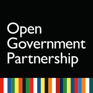

열린정부파트너십
Open Government Partnership
각국 정부의 투명성 향상, 반부패, 시민참여 활성화 및 정부와 시민사회의
협력 증진을 위해 설립된
국제 민·관협의체
OGP란?

2010년 버락 오바마 前 미국 대통령이 UN총회 기조연설을 통해 “투명성·반부패·시민참여”의 중요성을 강조하며 “책임감 있는 열린정부”를 실현할 것을 촉구하였습니다.
동 연설을 계기로 2011년 시민사회와 회원국 정부로 구성된 국제 민관 협의체인 열린정부파트너십(OGP)이 출범하였습니다.
2011년 8개국 정부(미국, 영국, 노르웨이, 브라질, 멕시코, 인도네시아, 필리핀, 남아공)가 주도하여 출범하였으며, 2021년 현재, 78개국 정부, 76개의 지방정부와 수 천개의 시민사회단체들이 동참하고 있습니다.
열린정부파트너십(OGP)은 열린 민주주의를 위한 정부와 시민사회 간의 국제적인 연대로서 정부와 국민의 소통을 확대하는 일에 중추적인 역할을 하고 있습니다.
OGP 열린정부 선언문 (2011.9.)
세계 인권 선언, 유엔 부패 방지 협약과 그 외 인권과 좋은 거버넌스에 관련된 국제 문서에 명시된 원칙에 전념하는 열린정부파트너십(OGP)의 회원으로서 우리는 전 세계 사람들이 더 개방적인 정부를 요구하고 있음을 인지한다. 세계인들은 시민이 공공문제에 보다 적극적으로 참여할 것을 요구하고 있으며 보다 투명하고 대응적이며 책무성 있는 효과적인 정부를 만들기 위한 방안을 강구하고 있다.
우리는 정부의 개방성을 향상시키기 위한 노력이 국가마다 다른 수준이며 국가마다 국가적 우선순위와 상황, 국민의 열망과 일맥상통하는 방식을 추구하고 있음을 인지한다.
우리는 투명성 증진, 반부패, 시민 권한 강화, 신기술 활용을 통한 보다 효과적이고 책무성 있는 정부 실현을 위한 약속을 강화하는 이 기회에 따르는 책임을 받아들인다.
우리는 서비스를 개선하고 공공자원을 관리하고 혁신을 추구하고 보다 안전한 공동체를 만들기 위한 시민과의 관계에서 개방성의 가치를 지지한다. 우리는 각국과 점점 더 상호연결되어가는 세계에서 보다 큰 번영과 안녕, 인간의 존엄성을 달성하고자 투명성과 열린정부 원칙을 받아들인다.
우리는 함께 다음을 선언한다.
정부 활동에 대한 정보 공개를 향상시킨다.
정부는 국민을 대표하여 정보를 수집하고 보관하며 시민은 정부 활동에 대한 정보를 요청할 권리가 있다. 우리는 모든 수준의 정부 활동에 대한 정보 공개와 접근성을 향상할 것을 약속한다. 우리는 주요 공공 서비스 및 활동을 위한 정부 지출과 성과에 대한 데이터를 체계적으로 수집하고 공개하는 노력을 배가할 것을 약속한다. 우리는 미가공 데이터를 비롯한 고가치의 정보를 국민이 손쉽게 찾고 이해하고 사용할 수 있으며 재사용이 용이한 양식으로 선제적으로 적시에 공개할 것을 약속한다. 우리는 정보나 해당 기록이 부적절하게 공개되지 않을 경우, 청구 과정 감독 등을 통해 효과적인 해결책을 제공할 것을 약속한다. 우리는 시민사회의 공공정보 접근성을 증진시키고 정부 정보시스템의 상호운용성을 용이하게 하기 위한 개방형 표준의 중요성을 인지한다. 우리는 국민에게 가장 가치 있는 정보를 확인하기 위해 피드백을 요청하고 받은 피드백을 최대한 반영할 것을 약속한다.
시민 참여를 지원한다.
우리는 의사결정과정과 정책형성과정에서 모든 국민의 평등하고 차별 없는 참여를 중시한다. 여성의 완전한 참여를 비롯한 공공 관여는 국민의 지식, 생각과 감독을 통해 정부의 효과성을 증대시킨다. 우리는 국민의 피드백을 받고 정부 활동을 발전시키고 모니터링하고 평가하는 과정에서 시민 참여를 증진시킬 창구를 개발하여 활용함으로써 정책형성 및 의사결정과정을 보다 투명하게 만들 것을 약속한다. 우리는 비영리단체와 시민사회단체가 표현, 결사, 의견의 자유를 위한 우리의 약속과 일맥상통하는 방식으로 운영될 수 있도록 그 역량을 보호할 것을 약속한다. 우리는 정부, 시민사회단체와 기업의 보다 나은 협력을 위한 메커니즘을 만들 것을 약속한다.
행정부 전반에 걸쳐 최고 수준의 전문적 청렴성을 실현한다.
책임감 있는 정부에는 공무원을 위한 높은 윤리적 기준과 행동강령이 요구된다. 우리는 공공자금과 정부조달 관리에서의 투명성을 보장하고 법치주의를 강화하는 강력한 반부패 정책, 메커니즘 및 관행을 마련할 것을 약속한다. 우리는 고위공무원의 소득과 자산에 대한 정보를 공개하는 법적 틀을 마련하거나 유지할 것을 약속한다. 우리는 내부고발자 보호법을 제정하고 시행할 것을 약속한다. 우리는 특정 법 집행 정보의 기밀성을 보장하면서 부패 방지 및 법 집행 기관의 활동과 그 효과와 그러한 기관의 도움을 받는 절차에 대한 정보를 만들 것을 약속한다. 우리는 정보와 전문성을 공유하는 것뿐만 아니라 공공 및 민간부문에서 뇌물을 비롯한 다양한 형태의 부패를 억제하기 위한 수단을 증대시킬 것을 약속한다.
개방성과 책무성을 위해 신기술에 대한 접근을 향상시킨다.
신기술은 정보 공유, 시민 참여와 협력의 기회를 제공한다. 우리는 신기술을 활용하여 더 많은 정보를 공개함으로써 국민이 정부가 하는 일을 이해하고 결정에 영향을 미칠 수 있도록 할 것이다. 우리는 접근이 용이하고 안전한 온라인 공간을 서비스를 제공하고 시민 참여를 도모하며 정보와 아이디어를 공유하는 창구로 발전시킬 것을 약속한다. 우리는 공평하고 저렴한 기술 접근성을 확보하는 것의 어려움을 인지하고 온라인과 모바일 연결성을 향상시키는 동시에 시민 참여를 위한 대체 메커니즘을 발굴하여 활용을 장려할 것을 약속한다. 우리는 시민사회와 재계와 함께 시민의 권한을 증진시키고 정부의 투명성을 증대하기 위해 신기술을 활용하는 효과적인 관행과 혁신적인 접근법을 마련할 것을 약속한다. 또한 우리는 기술에 대한 접근성을 향상시키는 것은 정부와 시민의 기술 활용 역량을 지원하는 것을 수반함을 인지한다. 우리는 공무원과 시민 모두가 기술적 혁신을 활용할 수 있도록 개발하고 지원할 것을 약속한다. 또한 우리는 기술이 명확하고 사용 가능하며 유용한 정보를 대체하는 것이 아니라 보완하는 것임을 이해한다.
우리는 열린정부 실현을 위해 지속적이고 일관된 노력이 필요함을 인지한다. 우리는 이러한 원칙을 실현하기 위해 취한 행동을 공개하고 원칙 구현을 위해 국민과 협의하며 새로운 위기와 기회를 마주했을 때 이에 맞춰 우리의 약속을 개선할 것을 약속한다.
우리는 모범 관행과 전문성을 공유하고 본 선언문에 명시된 구속력 없이 자발성에 기반한 약속을 이행함으로써 모범을 보이고 다른 국가에서의 열린정부 실현에 기여할 것을 약속한다. 우리의 목표는 혁신과 발전을 촉진하는 것이며 협력과 지원을 위한 전제조건이나 국가 순위를 매기기 위한 기준을 정의하는 것이 아니다. 우리는 포괄적 접근법의 개방성을 증진하고 역량 및 제도 형성을 위한 기술적 지원의 중요성을 강조한다.
우리는 이러한 원칙을 국제 협력에서 지원할 것이며 시민의 권한을 증진시키며 21세기 열린참여정부의 이상을 발전시키는 시민을 위한 글로벌 열린정부 문화를 형성하기 위해 노력할 것을 약속한다.
OPEN GOVERNMENT DECLARATION
September 2011 As members of the Open Government Partnership, committed to the principles enshrined in the Universal Declaration of Human Rights, the UN Convention against Corruption, and other applicable international instruments related to human rights and good governance:We acknowledge that people all around the world are demanding more openness in government. They are calling for greater civic participation in public affairs, and seeking ways to make their governments more transparent, responsive, accountable, and effective.
We recognize that countries are at different stages in their efforts to promote openness in government, and that each of us pursues an approach consistent with our national priorities and circumstances and the aspirations of our citizens.
We accept responsibility for seizing this moment to strengthen our commitments to promote transparency, fight corruption, empower citizens, and harness the power of new technologies to make government more effective and accountable.
We uphold the value of openness in our engagement with citizens to improve services, manage public resources, promote innovation, and create safer communities. We embrace principles of transparency and open government with a view toward achieving greater prosperity, well-being, and human dignity in our own countries and in an increasingly interconnected world.
Together, we declare our commitment to:
Increase the availability of information about governmental activities.
Governments collect and hold information on behalf of people, and citizens have a right to seek information about governmental activities. We commit to promoting increased access to information and disclosure about governmental activities at every level of government. We commit to increasing our efforts to systematically collect and publish data on government spending and performance for essential public services and activities. We commit to pro-actively provide high-value information, including raw data, in a timely manner, in formats that the public can easily locate, understand and use, and in formats that facilitate reuse. We commit to providing access to effective remedies when information or the corresponding records are improperly withheld, including through effective oversight of the recourse process. We recognize the importance of open standards to promote civil society access to public data, as well as to facilitate the interoperability of government information systems. We commit to seeking feedback from the public to identify the information of greatest value to them, and pledge to take such feedback into account to the maximum extent possible.
Support civic participation.
We value public participation of all people, equally and without discrimination, in decision making and policy formulation. Public engagement, including the full participation of women, increases the effectiveness of governments, which benefit from people’s knowledge, ideas and ability to provide oversight. We commit to making policy formulation and decision making more transparent, creating and using channels to solicit public feedback, and deepening public participation in developing, monitoring and evaluating government activities. We commit to protecting the ability of not-for-profit and civil society organizations to operate in ways consistent with our commitment to freedom of expression, association, and opinion. We commit to creating mechanisms to enable greater collaboration between governments and civil society organizations and businesses.
Implement the highest standards of professional integrity throughout our administrations.
Accountable government requires high ethical standards and codes of conduct for public officials. We commit to having robust anti-corruption policies, mechanisms and practices, ensuring transparency in the management of public finances and government purchasing, and strengthening the rule of law. We commit to maintaining or establishing a legal framework to make public information on the income and assets of national, high ranking public officials. We commit to enacting and implementing rules that protect whistleblowers. We commit to making information regarding the activities and effectiveness of our anticorruption prevention and enforcement bodies, as well as the procedures for recourse to such bodies, available to the public, respecting the confidentiality of specific law enforcement information. We commit to increasing deterrents against bribery and other forms of corruption in the public and private sectors, as well as to sharing information and expertise.
Increase access to new technologies for openness and accountability.
New technologies offer opportunities for information sharing, public participation, and collaboration. We intend to harness these technologies to make more information public in ways that enable people to both understand what their governments do and to influence decisions. We commit to developing accessible and secure online spaces as platforms for delivering services, engaging the public, and sharing information and ideas. We recognize that equitable and affordable access to technology is a challenge, and commit to seeking increased online and mobile connectivity, while also identifying and promoting the use of alternative mechanisms for civic engagement. We commit to engaging civil society and the business community to identify effective practices and innovative approaches for leveraging new technologies to empower people and promote transparency in government. We also recognize that increasing access to technology entails supporting the ability of governments and citizens to use it. We commit to supporting and developing the use of technological innovations by government employees and citizens alike. We also understand that technology is a complement, not a substitute, for clear, useable, and useful information.
We acknowledge that open government is a process that requires ongoing and sustained commitment. We commit to reporting publicly on actions undertaken to realize these principles, to consulting with the public on their implementation, and to updating our commitments in light of new challenges and opportunities.
We pledge to lead by example and contribute to advancing open government in other countries by sharing best practices and expertise and by undertaking the commitments expressed in this declaration on a non-binding, voluntary basis. Our goal is to foster innovation and spur progress, and not to define standards to be used as a precondition for cooperation or assistance or to rank countries. We stress the importance to the promotion of openness of a comprehensive approach and the availability of technical assistance to support capacity- and institution-building.
We commit to espouse these principles in our international engagement, and work to foster a global culture of open government that empowers and delivers for citizens, and advances the ideals of open and participatory 21st century government.
OGP 구성
(대한민국)
(이탈리아)
의장
부의장
글로벌서밋
개최
OGP 국가실행계획
국가실행계획은 OGP 참여의 핵심입니다.
OGP 회원국은 정부와 시민사회가 공동으로 열린 정부 구현을 위한 국가실행계획을 수립합니다.
OGP는 OGP 회원국에서 시민사회와 공동으로 수립한 열린정부과제를 담은 2개년 국가실행계획을 점검 및 평가하며, 정부와 시민사회의 협력을 증진하고 있습니다.
전세계 액션플랜을 통해 통합 4,000개 이상의 활동성과를 만들어내며, 더욱 투명하고 민주적인 국제사회를 이루어 나아가고 있습니다.
OGP 회원국
OGP는 2011년 설립된 이래 78개국 정부, 76개국 지방정부,
그리고 수 천개의 시민사회단체가 동참하고 있습니다.
중앙정부
지방정부
OGP 역대 의장국
미국

이탈리아